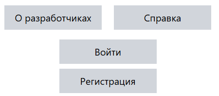
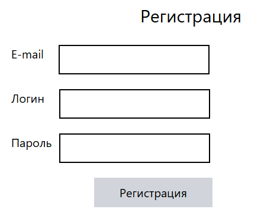
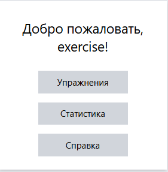
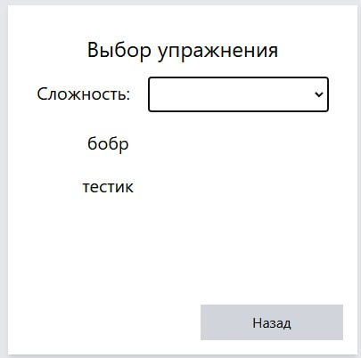
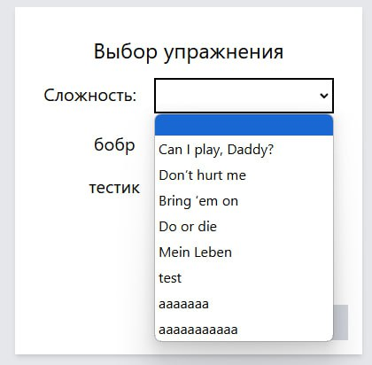
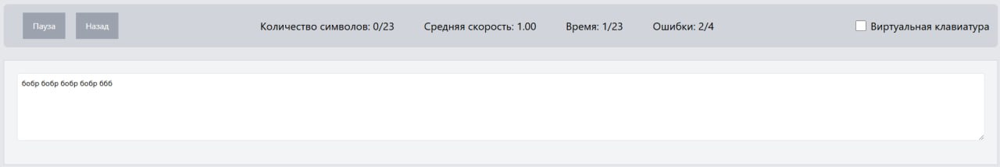
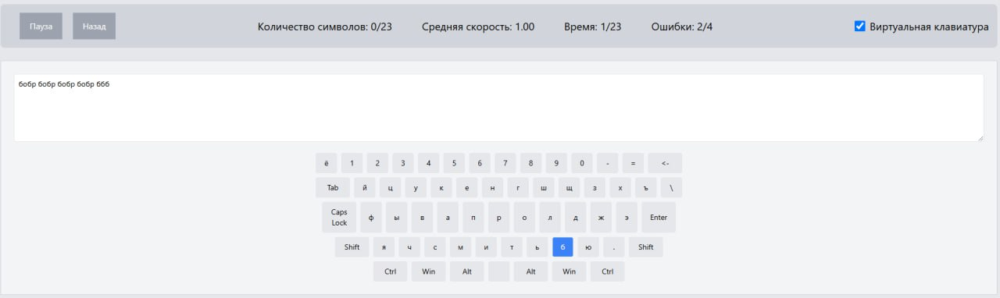
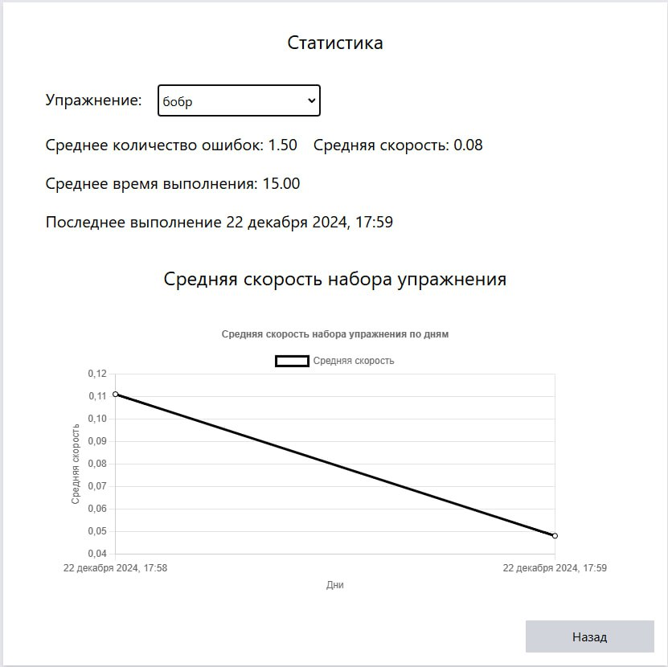

Клавиатурный тренажер - программа, позволяющая научится слепой десятипалой печати.
Пользователю на выбор даны упражнения, различающиеся как символами, так и уровнем сложности.
Реализация функции администратора позволяет создавать пользователю с правами
редактировать и создавать как уровни сложности, так и сами упражнения. К оглавлению
На главной странице пользователь может выбрать: войти или зарегестирироваться (см. рисунок). 
При нажатии на кнопку "Регистрация" откроется страница, где необхдимо заполнить поля и нажать на кнопку "Регистрация". 
Если при вводе данных не было ошибок, то система проверит роль пользователя и согласно ей откроет страницу. К оглавлению
Если пользователь не является администратором, то ему откроется страница, как на рисунке.  Упражнения
При нажатии на кнопку "Упражнения" система открывает страницу со списком упражнений.
Для выхода на главное меню пользователя нужно назать кнопку "Назад". 
Для выбора упражнения нужно выбрать уровень сложности из выпадающего списка.
 К началу раздела К оглавлению Выполнение упражнения
После нажатия на название упражненния система открывает страницу с выполняемым упражнением.
В поле в центре находится строка с символами выполняемого упражнения. При вводе правильного символа
строка сдвигается влево, стирая введенный символ. Сверху выводится информация о ходе выполнения упражнения.
Для приостановки выполнения упражнения нужно нажать кнопку "Пауза". Для выхода на главный экран пользователя
необходимо нажать кнопку "Назад" 
Если включить "Виртуальная клавиатура", то под полем упражнения появится виртуальная клавиатура и будет подсвечивать
вводимые символы.  К началу раздела К оглавлению Статистика
При нажатии на кнопку "Статистика" система открывает окно со статистикой пользователя.
Для просмотра статистики необходимо выбтать необходимое упражнение из выпадающего списка.
Ниже поля выбора упражнения расположены статистические данные. ниже статистических данных
расположен график средней скорости набора упражнения. Для выхода на главную страницу пользователя
нужно нажать кнопку "Назад".  К началу раздела К оглавлению